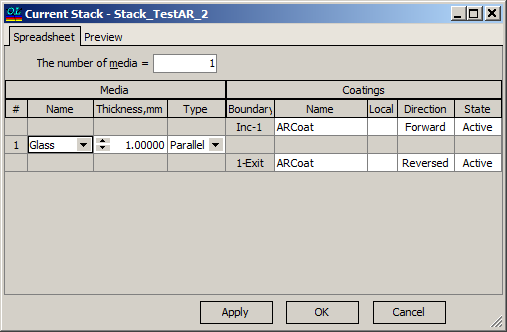

Modify Stack
Modify Stack
Navigation: OptiLayer Menu Commands > Synthesis Menu >
Modify Stack
` <idh_modify_design.html>`__ ` <idh_menu_synthesis.html>`__ ` <idh_modify_target.html>`__
This option allows you to modify a stack that is resident in memory.
When you start the Modify Stack command from the Synthesis menu, your changes are applied to the stack resident in memory, leaving the corresponding database stack unaffected. In this case, the header of the editing window contains the words “Current Stack.” It can be useful to modify a stack during the optimization process. You can restore the initial stack at any time by reloading it from the Stack database. To make the changes to the edited stack permanent, you should save it in a Stack database with the help of the Save Stack command from the Data menu.

The Apply button allows you to apply modifications without closing the window, while the OK button applies modifications and closes the window.
See also: